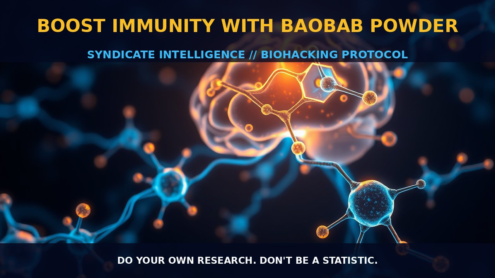

Boost Immunity With Baobab Powder

MECHANICS
Baobab powder is derived from the fruit of the baobab tree (Adansonia digitata), which predominantly grows in Africa but can also be found in Madagascar and Australia. The baobab tree has been utilized for centuries by indigenous populations for its medicinal properties, particularly for immune support and digestive health. Baobab powder is rich in nutrients and bioactive compounds, including vitamins, minerals, antioxidants, and fiber. It contains significant amounts of vitamin C, calcium, magnesium, potassium, and zinc. Additionally, baobab is a good source of polyphenols and flavonoids, which contribute to its antioxidant properties.
The mechanics behind the benefits of baobab powder are rooted in these nutritional components. Vitamin C acts as an immune booster by enhancing white blood cell function and protecting cells from oxidative stress. Calcium plays a crucial role in bone health and nerve transmission, while magnesium is essential for muscle relaxation and energy production. Potassium helps maintain fluid balance and supports heart health. Zinc boosts the immune system by stimulating T-cell activity and aiding in wound healing. The polyphenols and flavonoids found in baobab powder have been shown to possess anti-inflammatory properties, further supporting its use as a natural supplement.
BIOLOGICAL LEVERAGE
Baobab powder's high vitamin C content is particularly noteworthy for its impact on immune function. Vitamin C is an essential nutrient that plays a pivotal role in the synthesis of collagen and the maintenance of blood vessels, bones, and skin. It also supports immune health by enhancing phagocyte activity, which are cells responsible for ingesting bacteria and other harmful substances. Additionally, vitamin C acts as an antioxidant, scavenging free radicals and reducing oxidative stress.
Furthermore, baobab powder's fiber content can provide digestive benefits. Fiber aids in the regulation of bowel movements and promotes gut health by serving as a prebiotic that supports beneficial gut microbiota. This, in turn, can enhance nutrient absorption and improve overall gastrointestinal function. The minerals present in baobab powder contribute to various metabolic processes and enzymatic reactions within the body. For instance, magnesium is involved in over 300 biochemical reactions, including protein synthesis, muscle and nerve function, blood glucose control, and energy production.
TACTICAL IMPLEMENTATION
When incorporating baobab powder into your biohacking regimen, it is important to consider dosage and timing for optimal efficacy. While specific dosing guidelines are not well established in the provided context, low-to-moderate amounts of baobab powder are generally recommended to maintain safety and effectiveness. A common practice is to start with 1-2 teaspoons (approximately 5-10 grams) daily mixed into water or smoothies.
Timing can also play a role in maximizing its benefits. Consuming baobab powder first thing in the morning may help boost your immune system early in the day, while incorporating it before meals can aid digestion and enhance nutrient absorption from other supplements. Baobab powder pairs well with adaptogenic herbs like ashwagandha or ginseng for synergistic effects on stress management and immune function.
Do your own research. Don't be a statistic.
Prostar Life Hack
A common practice is to start with 1-2 teaspoons (approximately 5-10 grams) daily mixed into water or smoothies.
[ AUTHOR: LEAD TECHNICAL RESEARCHER ]